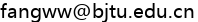

致有意来我组科研实习的本科生同学
本科生同学，你好！ 时常有我院大一到大三的同学联系进组，因此我想有必要谈谈我的个人观点和做法，主要根据多年课外指导大创/竞赛/研究等的大量经验教训总结而成，希望能match到合适的学生长期培养与合作，避免时间和精力的浪费。也许这里的很多内容你并不认同，那请相信你自己的判断，选择适合你的老师和团队。
- 我的学生都是我自己带。受客观条件如工位、精力所限，我组仅接收预期留组读硕博的本科生进组。如果对我的研究真感兴趣且想有所作为，那么欢迎你来与我共同成长，彼此成就。如果你水平很高，估计在我们这里做科研也收获不到什么，那你开始就应去找你认为水平更高的导师。有更高追求、更好选择的大神同学千万别让我耽误了你。
- 学术界高度内卷，老师考核压力极大，而课外培养本科生非必要的考核指标。对很多本科生来说，科研并非必做之事，老师亦非真正导师，而又希望用最少的时间付出换或蹭尽可能多成果达到目的后跑路。古语云上下同欲者胜，我认为为课题组培养三观相符、能力出众和配合默契的未来研究生是唯一的激励，确保师生彼此都真心付出。
- 对很多本科生来说，应付学业及杂事等已筋疲力尽，有空更愿睡懒觉或玩游戏，甚至讨厌优绩主义，可以理解。但这对指导老师来说，等于时间和资源的浪费。因此，希望你有极强的好胜心和上进心：要么别来，要么狂卷。本科生拿的奖项和荣誉于我，通常只会带来片刻心理满足而非职业发展。你才是行动的主角。
- 能以个人真正努力(非挂名或共同X作)发顶会顶刊论文的本科生是极少数(这样的大神通常不会来找我指导😄)，需要长期的厚积薄发，个人能力和投稿运气都缺一不可。正常逻辑下，好的idea，为什么老师不优先交给有经验且毕业有要求的研究生(特别是博士生)而是给缺少经验、来去随意的新手本科生来做和发表？除非是...
- 大一同学请慎重进组，因为未专业分流，缺少相关知识技能，不确定性高，志向多变。同理，我也认为很难以指导外校和非本院的学生。在无实际约束条件(如毕业)下，学生易跑路，老师易吃力不讨好，效果差，浪费时间。
- 为避免耽误学生前程，我尽量避免给不熟悉的学生签署各类推荐信(因非工作职责)，建议请其他知名学者推荐。
- 我组的本科生培养基本路径：大二心态通过学科竞赛和竞争性活动积累成果，树立信心，卷成习惯；大三辅助参与组里研究生的科研工作，培养科研技能和抗压能力；大四领跑独立开展科研工作，和研究生无异。如果你是传说中的领军型学生，可以带导师飞，那么进度咋安排我听你的😄。如果你认为这些安排是PUA你，请别来。
杨绛先生说：善良要遇对人，付出要对值得的人。如果你有意加入我们，请发邮件：

和。